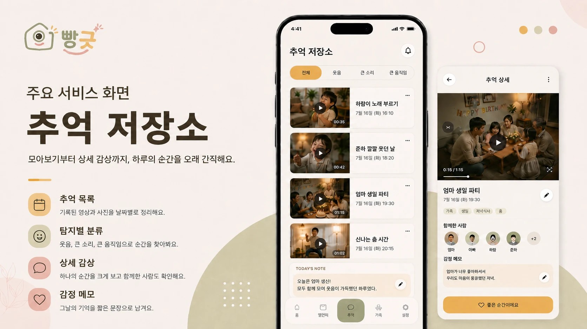
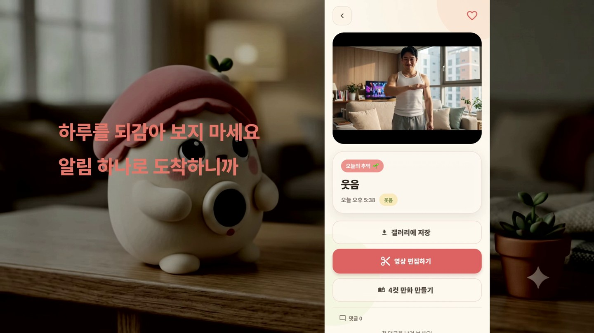

04 빵긋
웃음이 터진 순간만 남기는 AI 홈캠

서비스 소개 이미지

실제 앱 화면. 팀 영상 포트폴리오에서 캡처
JetsonMQTTWhisperLLMML KitJiraNotion
우수상
SSAFY 공통 프로젝트, 삼성전자
4주
기획부터 시연까지
17회
문서로 남긴 데일리 스크럼
제가 맡은 일
- 서비스 기획서를 다시 써 MVP 7단계를 기기, 서버, 앱 역할로 나누고 단계마다 요구사항과 API 번호를 연결
- Jira를 에픽, 스토리, 작업 3단으로 나눠 분담하고 데일리 스크럼 진행
- AI 파트에서 Whisper 자동 자막과 LLM 4컷 만화 기능 담당
- ERD 초안 작성. 백엔드 담당이 개발하며 22개 테이블로 확장
판단
기획서를 다시 쓴 이유문서 하나로 연결
왜 다시 썼나
기획 주에 AI로 빠르게 만든 기획서가 있었지만 팀 전체가 그 기획을 이해하지 못했습니다. 같은 문서를 보고 각자 다른 그림을 그리고 있었습니다.
어떻게 썼나
MVP 7단계를 젯슨, 서버, 폰의 역할로 쪼개고 단계마다 요구사항과 API 번호를 붙였습니다. 이후 각자 파트가 그 문서 기준으로 연결됐습니다.
매 순간을 저장하지 않은 이유웃음 순간만 업로드
왜 문제였나
홈캠 영상을 매 순간 서버에 올리면 용량과 사생활 문제가 함께 커집니다.
그래서 제안한 것
블랙박스처럼 24시간 순환 녹화는 기기 안에서만 돌리고, 웃음이 감지된 순간의 클립만 서버로 올리자고 제안했습니다. 이 구조가 서비스 정의 첫 문단에 들어갔습니다.
범위를 좁힌 이유4주 안에 완성
왜 좁혔나
인물 탐지와 팬틸트 자동 추적까지 넣으면 4주 안에 끝낼 수 없었습니다.
무엇을 뺐나
둘을 범위 밖으로 두고 이벤트 판단을 웃음소리 감지 하나로 단순화했습니다. 무엇을 하지 않을지도 기획서에 적었습니다.